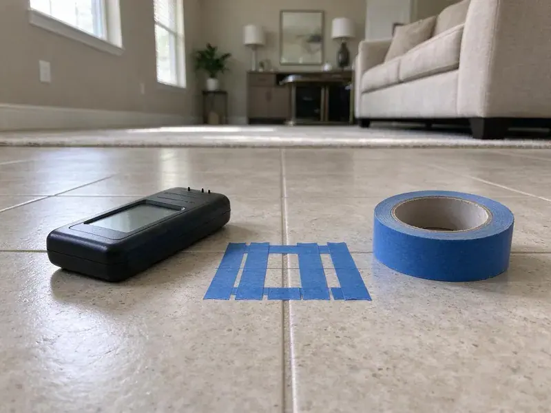

Clogged Sewer Line in Ankeny, IA
When your sewer line clogs in Ankeny, IA, it can bring your home to a standstill. KFR Plumbing offers fast and effective solutions to restore your plumbing.
- Root Cutting and Hydro Jetting
- Upfront Pricing
- Quick, reliable service
- Upfront pricing

Need Clogged Sewer Line Help in Ankeny, IA?
Call now and a sewer technician will be on the way with cable machines, jetting equipment and a camera.
Fast Help for a Clogged Sewer Line in Ankeny, IA
KFR Plumbing understands the urgency and frustration of a clogged sewer line. Tree root intrusion, grease buildup, and pipe damage are common culprits in Iowa homes. Clay soil shifts as it freezes, thaws, wets, and dries, which can crack older sewer lines and let roots inside.
Our expertise includes:
- Rooter service to cut through tree root intrusions
- Sewer camera inspection for accurate diagnosis
- Camera inspection and locating to find breaks and bellies

Additional Plumbing Maintenance Services in Ankeny, IA
Our maintenance and specialty plumbing services in Ankeny, IA protect your home year-round and extend the life of every system.


Customers
Why Choose KFR Plumbing for Clogged Sewer Line in Ankeny, IA?
Our plumbers are highly trained in the latest sewer line clearing techniques, so your plumbing system is handled with care and professionalism.
- Local Knowledge, Understanding Iowa soil conditions and common plumbing issues, like tree root intrusion, helps us provide more targeted solutions.
- Lasting Solutions, Our goal is not just to clear the immediate clog, but to identify underlying causes to prevent future issues.
- Transparent Pricing, You will always receive a clear, upfront estimate before any work starts, with no hidden fees.
Citywide Coverage
From downtown Ankeny to the surrounding suburbs, our team is dispatched promptly to address your clogged sewer line emergency. We know plumbing problems don't wait, so neither do we.
Experienced Team
The KFR Plumbing team is made up of certified professionals, each skilled in identifying and resolving complex sewer line problems, from tree root invasions to collapsed pipes. You can trust their expertise for your Ankeny property.
Safety-First Approach
Sewage contains bacteria and viruses, so our crews wear protective gear and contain any spill. We clean and disinfect the work area before we leave.
Trusted Certified Ankeny Plumbing Services Professionals
At KFR Plumbing, we take pride in providing licensed, certified plumbing services throughout Ankeny, IA. Backed by recognized industry credentials, our experienced plumbers combine technical skill with genuine customer care. Whether it is repair, installation, or maintenance, we follow strict safety and quality standards to deliver long-lasting results you can trust.
Call Us Now PHCC Plumbing Contractor Recognition
PHCC Plumbing Contractor Recognition Better Business Bureau (BBB) Accreditation
Better Business Bureau (BBB) Accreditation Angi Certified Pro
Angi Certified Pro ISO 9001 Quality Management Certification
ISO 9001 Quality Management CertificationTrusted Clogged Sewer Line Services in Ankeny, IA
Identifying and Repairing Damaged Pipes in Ankeny
Sometimes, a recurring clog indicates a more significant issue, like a damaged, cracked, or collapsed sewer pipe. Our camera inspections can identify these structural problems. While our primary service is clearing clogs, if we find pipe damage, KFR Plumbing can provide clear recommendations for repair or replacement options, from trenchless methods to traditional excavation, for a long-term solution in Ankeny.

Cleaning vs. Repairing a Sewer Line in Ankeny, IA
If the camera shows a sound pipe with a grease or root clog, cleaning is usually all you need. Cracked, offset or collapsed pipe will keep clogging no matter how often it is cleared. Cleaning typically costs a few hundred dollars, while repairs range from a spot fix to trenchless lining or full replacement. We walk you through the footage and costs so you can decide.
Emergency Sewer Line Clog Clearing in Ankeny, IA
A completely blocked sewer line is a serious emergency that can lead to raw sewage backing up into your home or business. KFR Plumbing provides fast emergency clogged sewer line services throughout Ankeny, IA. Our technicians are available to respond fast, bringing the necessary tools and expertise to address your urgent plumbing crisis and minimize damage.
Grease and Wipes Sewer Blockages in Ankeny, IA
Cooking grease cools and hardens in the main line, and so-called flushable wipes do not break down the way toilet paper does. Together they form dense plugs that a cable may only punch a hole through. Hydro jetting at high pressure scours the pipe walls clean and flushes debris downstream. We also share simple habits that help avoid another grease or wipe clog.
Emergency Clogged Sewer Line Repair in Ankeny, IA
A sudden sewer backup is an emergency that needs immediate attention. KFR Plumbing provides fast response for emergency clogged sewer line repairs across Ankeny, IA. We understand the potential for water damage and health risks, so our emergency teams are equipped to diagnose and clear the blockage quickly, minimizing damage and restoring your plumbing. Do not hesitate to call us at (515) 308-3583 if you experience a sewer line emergency.
Hydro-Jetting Services in Ankeny, IA
Hydro-jetting is a powerful method for clearing severe sewer line clogs, especially those caused by grease, scale, or heavy sludge buildup. This process uses highly pressurized water jets to scour the inside of your pipes, not only clearing the blockage but also cleaning the pipe walls. It is an excellent preventative maintenance tool and is particularly effective for older pipes in Ankeny that may have collected years of debris. This technique is safe for most pipe types.
Grease and Sludge Buildup Removal in Ankeny, IA
Over time, grease, soap scum, and other organic matter can accumulate on the inner walls of your sewer pipes, especially in kitchen lines, leading to significant blockages. Our team at KFR Plumbing is skilled in removing these types of buildup using specialized tools and hydro-jetting. We make sure your pipes are completely cleaned, restoring full flow and preventing future buildup in Ankeny, IA.

Tree Root Removal Services in Ankeny
Tree roots are a common cause of clogged sewer lines, especially in older Ankeny homes with mature landscaping. Roots seek out moisture and can infiltrate even tiny cracks in pipes, growing and eventually blocking the flow. KFR Plumbing offers specialized root removal techniques, including mechanical augers and hydro-jetting, to cut through and clear these intrusions, restoring proper drainage.
Clogged Sewer Line Help Near Me in Ankeny, IA
Local crews understand which neighborhoods have older clay laterals, which have heavy tree cover and how city sewer taps are configured. That knowledge speeds up diagnosis. It also helps us coordinate with the city when the clog is on the city side.
When you search for 'clogged sewer line near me' in Ankeny, IA, KFR Plumbing is your reliable local expert. Our proximity and understanding of local plumbing challenges mean we can respond fast and provide tailored solutions.
KFR Plumbing at a Glance
- Fully licensed plumbing team covering Ankeny, IA
- Same-day appointments and 24/7 emergency response
- Clear written estimates, no hidden fees
- 4.8-star rated by 620+ Iowa customers
Ankeny Map
Ankeny Information
- Population
- 74,458
- Area codes
- 515/641/319
- Service area
- Ankeny and communities within 40 miles
- Nearby
- Des Moines, Urbandale, West Des Moines, Waukee
Clay soil shifts as it freezes, thaws, wets, and dries, which can crack older sewer lines and let roots inside. Effective clogged sewer line service is crucial for homes in Ankeny, IA, where mature trees and shifting ground can contribute to pipe damage and root intrusion.
Expert Services
Trust our professionals for reliable KFR Plumbing solutions in Ankeny, IA.
Our Specialized Plumbing Services in Ankeny, IA
At KFR Plumbing, we provide a complete range of plumbing services across Ankeny, IA. From leak detection to full system installations, our team ensures fast, precise, and affordable service for both residential and commercial properties. Explore our core services below:


How Our Clogged Sewer Line Process Works in Ankeny, IA
KFR Plumbing follows a clear process to deliver effective and lasting solutions for your sewer line problems.
Request a Quote
Contact KFR Plumbing by calling (515) 308-3583 to schedule an appointment. We will gather initial information about your sewer line issue and arrange for a technician visit.
Diagnostic Assessment
Our technician will arrive on-site, perform a thorough visual inspection, and often use a sewer camera to accurately locate and identify the cause of the clog inside your pipes.
Clear the Clog
Based on the diagnosis, we will use the most effective method, such as snaking or hydro-jetting, to clear the blockage. We make sure the line is fully open and flowing properly.
Frequently Asked Questions About Clogged Sewer Line in Ankeny
The cost to clear a clogged sewer line in Ankeny usually ranges from $250 to $800, depending on the severity and location of the clog, and the method required (e.g., snaking versus hydro-jetting). More complex issues like extensive root removal or pipe damage could increase the cost.
Attempting to clear a main sewer line clog yourself is not recommended. Over-the-counter drain cleaners can damage your pipes, and without the right tools like sewer cameras or hydro-jetters, you risk pushing the clog further or causing more damage. Professional plumbers have the specialized equipment and experience to safely and effectively clear these blockages.
Routine clearing does not require a permit. Cleanout installation, spot repairs and full replacement typically do. We handle permits and inspections when they apply.
To prevent future clogs, avoid flushing anything but human waste and toilet paper. Be careful about pouring grease down kitchen drains, use drain screens, and consider periodic professional drain cleanings, especially if you have mature trees near your sewer lines in Ankeny.
KFR Plumbing uses professional-grade equipment from reputable brands known for their reliability and effectiveness in sewer line service. This includes Ridgid for drain cleaning machines and various quality manufacturers for our sewer cameras and hydro-jetting equipment, for top performance in your Ankeny home.
Yes, using enzymatic drain cleaners (not chemical ones) regularly can help break down organic matter in your drains and sewer line. Additionally, being mindful of what goes down your drains, avoiding grease, coffee grounds, and non-flushable items, is key for prevention. Bio-Clean is a brand we often recommend for maintenance.
Minor sewer line cleanings typically do not require a permit. However, if the clog calls for extensive repair work, such as replacing a section of the sewer line, a permit from your local permitting department will likely be required for code compliance. KFR Plumbing handles all necessary permitting.
Cutting roots clears the line but roots will grow back if the joints remain open. Root treatments can slow regrowth, and pipe lining or replacement seals the joints for good. We can show you the extent of root intrusion on camera.
What People Are Saying About Our Plumbing Experts?

Mark T.
When our office needed drain cleaning, KFR Plumbing provided quick, reliable service. The plumber arrived on time and made sure every drain flowed perfectly before leaving. Very satisfied.
Drain Cleaning · Urbandale, IA
James P.
Our commercial plumbing system had a leak under the sink, and KFR Plumbing handled it professionally. The plumbers arrived quickly and restored everything without disruption to our customers.
Commercial Plumbing · West Des Moines, IA
Laura S.
I scheduled a water heater replacement, and the team made the process smooth and affordable. The new unit works perfectly, and they cleaned up after completing the job.
Water Heater Replacement · Ankeny, IARobert G.
The trenchless sewer replacement saved our front yard. They walked us through the camera inspection footage first so we knew exactly what we were paying for.
Sewer Line Replacement · Ames, IASofia M.
Two new toilets installed in one visit, no mess left behind, and the tech even adjusted a faucet he noticed was dripping. Fair pricing and really friendly.
Toilet Installation · Ankeny, IA
Emily R.
I called KFR Plumbing for plumbing repair, and the technician was fast, polite, and thorough. They explained the problem clearly and fixed it the same day. I will definitely hire them again. Highly recommended!
Plumbing Repair · Des Moines, IA